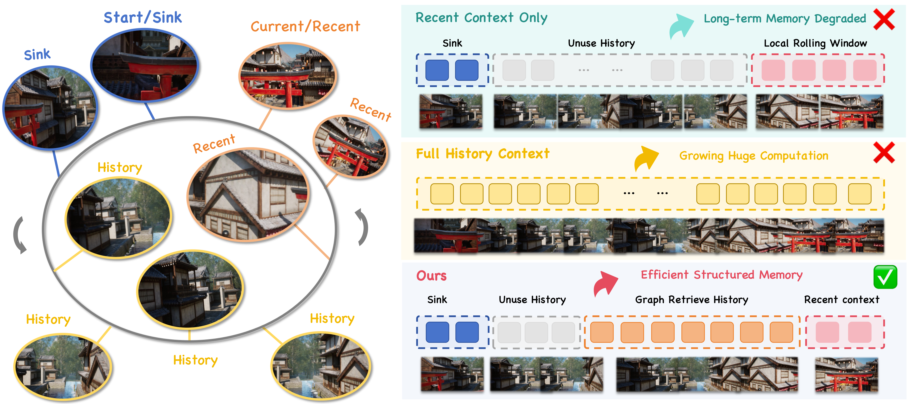
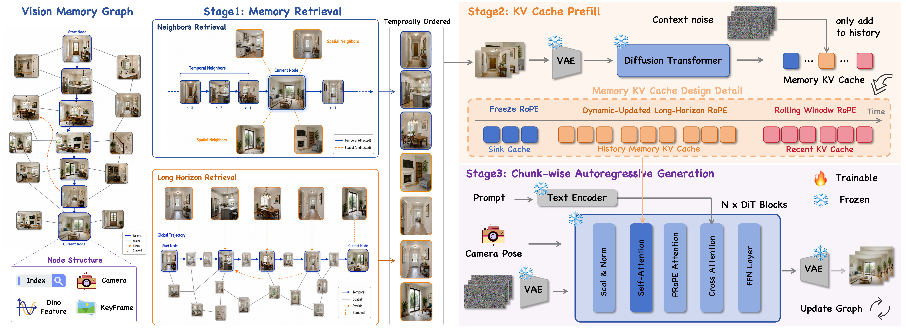
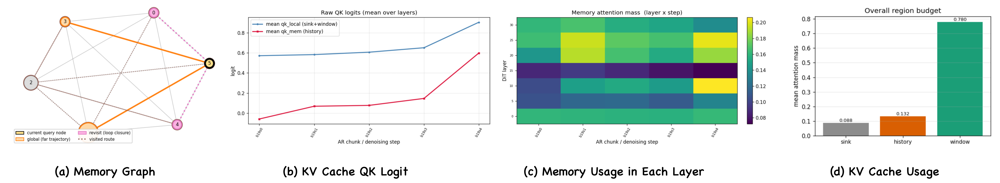

Recent context
Strong local continuity with bounded cost, but an old viewpoint disappears after it leaves the rolling window.
GraphMem is designed to improve access to distant, spatially relevant views while keeping the active context compact and bounded.
01 / Motivation
Chunk-wise autoregressive generators condition each new segment on a rolling window of recent keys and values. Once an earlier view leaves that window, a later revisit may no longer have the geometry, appearance, or layout evidence it needs.

Strong local continuity with bounded cost, but an old viewpoint disappears after it leaves the rolling window.
Preserves all observations, while attention length and redundant context grow with the generated video.
Separates persistent storage from active conditioning, then recalls only spatially and visually relevant evidence.
02 / Framework
A scene-centric graph records keyframes with visual descriptors, camera poses, and temporal indices. Before each new chunk, GraphMem retrieves complementary evidence and prefills it into the frozen model's native KV representation—without parameter updates or changes to the denoising schedule.

Search temporal neighbors, pose-based spatial neighbors, and global visual matches, then select a relevant and diverse set in temporal order.
Pass retrieved frames through the frozen VAE and DiT to construct layer-wise history keys and values in the model's native representation.
Condition the frozen generator on sink, retrieved history, and recent caches to produce the next autoregressive video chunk.
Add new keyframes, descriptors, poses, and graph relations so the latest observations become retrievable evidence for future revisits.
03 / Analysis
Attention analysis shows that the model still relies primarily on its local window. Retrieved history contributes selectively where it is useful, while sink tokens retain a smaller stabilizing share.

The current trajectory remains the main source of attention.
Retrieved distant views receive targeted attention when relevant.
A compact anchor region supports stable autoregressive context.
Native KV prefill stays much closer to recent-context logits than the learned-adapter alternative analyzed in the paper.
04 / Showcase
Results include long trajectories, camera turns, and revisited regions. Hover to preview; open any case for the full sequence.
05 / Comparison case
Compare every method on the identical trajectory. Start all videos together to inspect drift, structural collapse, and loop closure.
All methods share the same scene and camera trajectory
06 / Ablation case
These comparisons isolate the contributions of graph organization, temporal retrieval, and spatial retrieval.
GraphMem / 2026